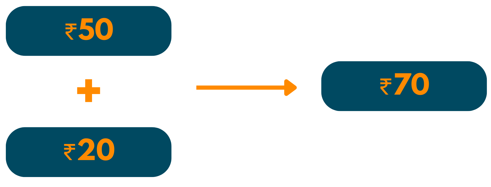
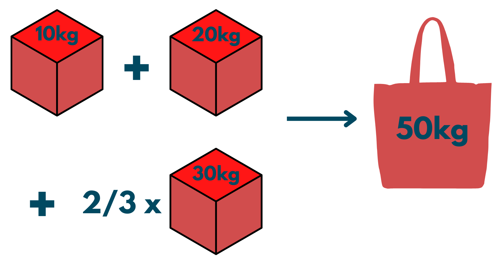

Metoda Greedy
Această abordare are meritele și dezavantajele ei. Deși, este o modalitate bună de a rezolva problemele de optimizare, totuși, în unele cazuri, trece cu vederea unele condiții. Prin urmare, este important să respectați fiecare pas în timp ce lucrați cu acest algoritm pentru a obține cea mai optimă soluție care urmează setul de date furnizat.
Cazul 1: 16$
Algoritmul Greedy va fi așa:
Cazul 2: 17$
Procedura va fi după cum urmează:
Acum, aceasta nu este o idee foarte optimă. Aici eșuează algoritmul Greedy. Prin urmare, putem spune că utilizarea acestuia este excelentă pentru soluții imediate, dar nu pentru o soluție optimizată la nivel global.

- Ni se oferă o listă ordonată de resurse precum monede, sarcini etc.
- Începem cu cea mai mare/valoroasă resursă.
- Mai târziu, continuăm să adăugăm resursele mai puțin valoroase pentru a ajunge la soluția optimizată.
I. Cumpărarea Și Vânzarerea Stockurilor
Condiția problemei: Vi se oferă prețuri matrice [] care conțin prețul unui stoc în anumite zile. Trebuie să alegeți o zi pentru cumpărarea acțiunilor și alta pentru vânzare. Returnați zilele în care cumpărați și vindeți stocul.
Abordarea problemei: Este destul de evident că atunci când vrei să cumperi ceva, vrei să plătești cel mai mic preț posibil. În mod similar, în timp ce vindeți aceleași lucruri, veți dori să vă creșteți profiturile vânzându-le la un preț mai mare. Deci:
- Aici, sortarea nu va funcționa, deoarece trebuie să dați numărul zilei. Deci, veți găsi mai întâi valoarea minimă a stocului din prețuri[] .
- Indicele valorii minime va deveni în ziua în care vă cumpărați acțiunile.
- Pentru a vinde stocul, trebuie să verificați valoarea stocului în zilele după ce ați cumpărat stocul.
- Prin urmare, rulați un loop până la sfârșit, începând de la ziCumpărare și găsiți valoarea maximă a stocului în matricea rămasă.
- Acum, scădeți valoarea ziCumpărare din ziVânzare
Algoritm C++
{kind=link}
II. Numărul Minim De Monede
Condiția problemei: Ni se dă o valoare V și trebuie să dăm restul acesteia în monede indiene. Acum, valorile nominale sunt 1, 2, 5, 10, 20, 50, 100, 200, 500, 2000. Rezultatul ar trebui să conțină cel mai mic rest a valorii date.
Abordarea problemei: Din nou, deoarece trebuie să găsim numărul minim posibil de monede în schimbul valorii V, vom folosi Greedy. Deci, vom începe cu moneda cu valoare maximă care este mai mică sau egală cu V. Acum, vom scădea valoarea monedei alese din valoarea dată. Pentru valoarea rămasă, vom căuta din nou moneda cu valoare maximă și o vom adăuga la răspuns. Pașii sunt următorii:
- Găsiți cea mai valoroasă monedă dintre cele date.
- Adăugați-o la rezultat și scădeți din V.
- Repetați pașii de mai sus până găsiți valoarea completă.
 Algoritm C++
{kind=link}
III. Problema Fracționară A Rucsacului
Condiția problemei: Vi se oferă greutățile și valorile a N articole. Trebuie să puneți aceste articole într-un rucsac de capacitate W în așa fel încât valoarea finală a rucsacului să fie maximă. Puteți împărți articolele în fracții pentru a obține cel mai optim răspuns.
Abordarea problemei: Deoarece vi se cere să aflați valoarea maximă a rucsacului, ar trebui automat să utilizați abordarea Greedy. Acum, trebuie să maximizăm valoarea rucsacului în limita capacității sale fixe. Este destul de simplu că vom alege acel element a cărui greutate este mai mică, dar a cărui valoare este mai mare. De ce? Deoarece avem nevoie de valoare maximă în cadrul greutății limitate, dacă alegem o valoare mai mare cu o greutate mai mică, automat vom putea pune mai multe elemente în rucsac. Astfel, atingerea celei mai mari valori posibile.
Să vedem pașii care trebuie de urmat:
- Avem nevoie de elemente cu greutate mai mică și cu mai multă valoare. Deci, vom calcula rapoartele acestor două pentru fiecare element. (Raport = valoare/greutate)
- Deoarece avem nevoie mai întâi de elemente cu valoare maximă, vom sorta aceste rapoarte în ordine crescătoare.
- Acum, vom itera elementele și vom verifica dacă greutatea acelui element este mai mică sau egală cu greutatea maximă a rucsacului. Dacă da, adăugăm asta la răspunsul nostru. Altfel, mergem mai departe.
 Algoritm C++
{kind=link}